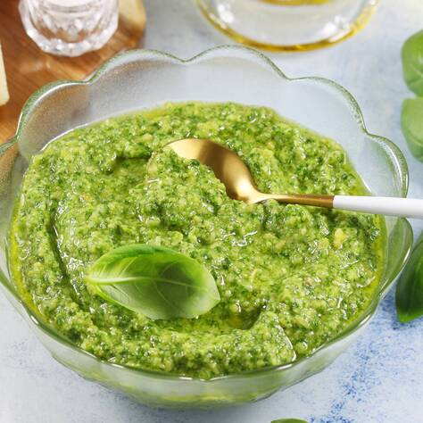

Pesto

Description
Pesto is a sauce originating in Genoa. It can be used as a sauce for pasta or meat.
Ingredient
- fresh basil leaves
- garlic cloves
- parmesan cheese
- olive oil
- pine nuts
Steps
- Combine all ingredients in a food processor
- Blend them to a smooth paste